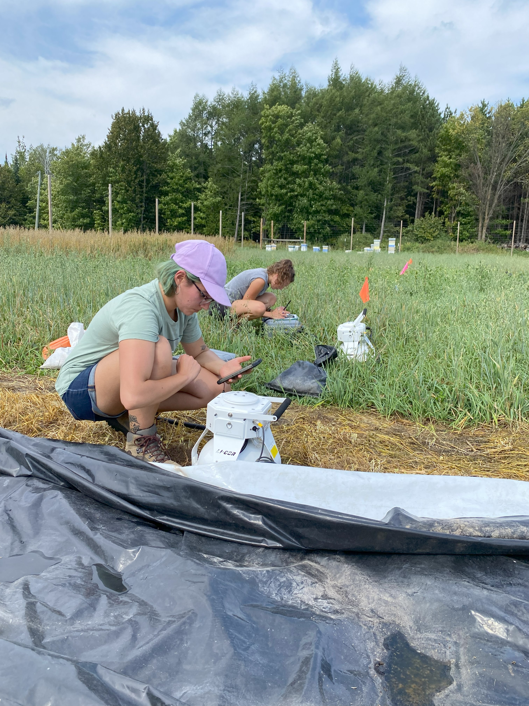
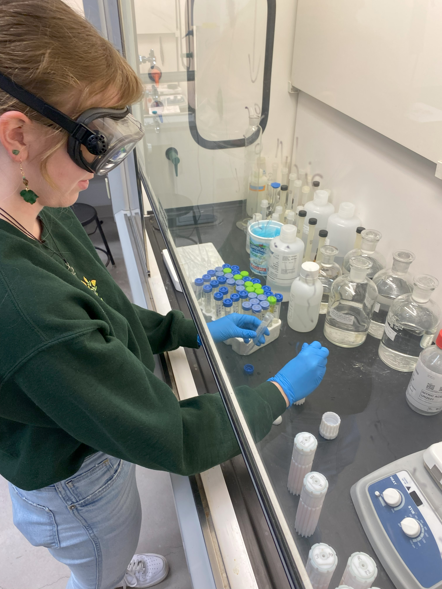

ABL Reseach Projects
Applied Agronomy

NMU-ABL student research technicians collecting greenhouse gas emission measurements in an experimental cover crop termination study plot at MSU-UPPEC.
We are collaborating with Michigan State University Upper Peninsula Research & Extension Center (Chatham, MI) and Full Plate Farm (Skandia, MI) to examine implications of soil conservation practices on soil health, greenhouse gas emissions, soil temperature & moisture, weed occurrence and organic vegetable crop production.
- NMU-ABL undergraduate research assistants recently presented their research at the 2024 Marbleseed Organic Farming Conference (La Crosse, WI), where NMU-ABL members also contributed toward the Organic University Sesssion “Climate Adaptation for Midwest Organic Vegetable Growers” facilitated by a team of researchers from UW-Madison.
Select Publications & Presentations:
- What the Tarp: Assessing Influence of Cover Crop Termination Practices on Soil Health and Fertility in Organic Vegetable Crop Production. Rothhorn et al. 2024. Marbleseed Organic Farming Conference. Click to see
- Tarping for the Future: Evaluating Soil Temperature and Soil Greenhouse Gas Fluxes Among Cover Crop Termination Methods for Organic Vegetable Crop Production. Maynard et al. 2024. Marbleseed Organic Farming Conference. Click to see
- To Tarp or Not to Tarp? Evaluating Effectiveness of Cover Crop Termination Methods and Weed Management Outcomes for Organic Vegetable Crop Production in the U.S. Midwest. Click to see
Metal & Nutrient Testing

NMU-ABL student research technician Amber Wager digesting food produce samples in trace metal grade nitric acid in preparation for heavy metal testing using ICP-MS.
We are collaborating with Philip Yanguoru (NMU-Chemistry) to evaluate heavy metal concentrations among conventional, organic and not-certified organic fruit and vegetable production methods to examine the consumer health implications. This pilot-study is intended to directly inform future research activities where we plan to use inductively coupled plasma mass spectrometery (ICP-MS) methods to examine linkages between heavy metal concentrations in produce with soil, water and crop production management methods.
- NMU-ABL undergraduate research assistants recently presented their research at the 2023 American Chemical Society Regional Chapter Meeting (Marquette, MI), and we are currently also examining heavy metal concentrations among beer styles, container types and production scales.
Select Publications & Presentations:
- Trace Heavy Metals Analysis in Locally Bought Marquette, Michigan Produce. Wager et al. 2023. American Chemical Society Regional Chapter Meeting. Click to see
Wetlands
Content under development
Aquatic Ecosystems
Content under development
This site is hosted by Dr. Matthew J. Van Grinsven
Northern Michigan University Earth Environmental & Geographical Sciences Dept. (NMU-EEGS)
For more information: https://nmu.edu/eegs/matthew-van-grinsven.